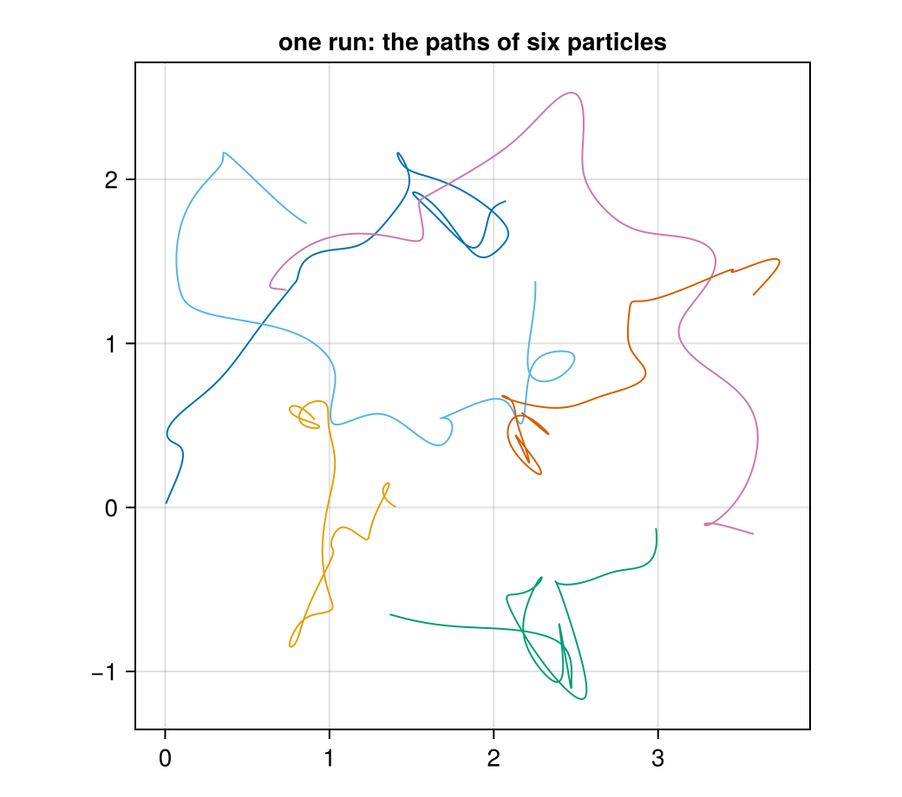
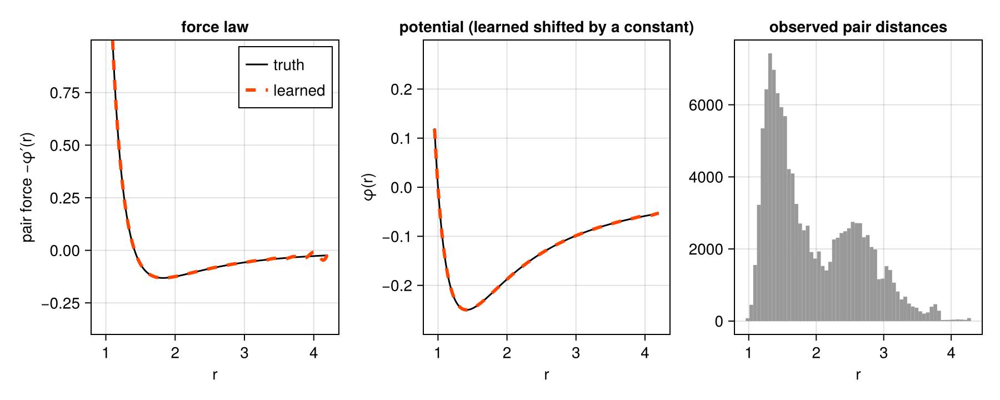
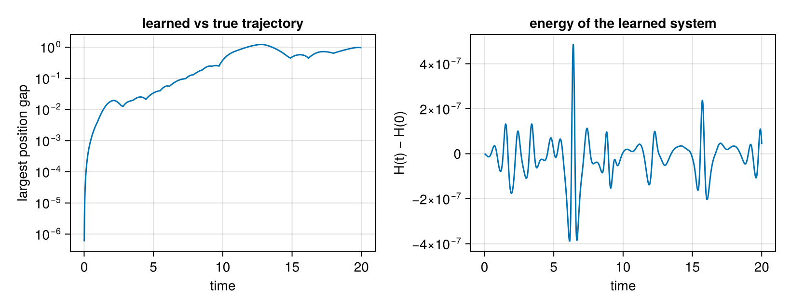

Discovering a force law from particle trajectories
Download as a Jupyter notebook
A few particles move in the plane and interact through some unknown force. All you observe are their positions over time. What is the force law?
A generic model of the forces would be a function from all positions (here $2 \times 6 = 12$ numbers) to all forces: hopeless with limited data. The physics says much more, and every piece of it shrinks the problem:
- the forces come from an energy, $F = -\nabla E$ (the law; tutorial 5);
- the energy is invariant under rotations, translations and relabelling of the particles;
- it is a sum over pairs, $E = \sum_{i<j} \varphi(\lVert x_i - x_j\rVert)$.
Together they reduce the unknown to one function of one variable, the pair potential $\varphi(r)$. This tutorial learns $\varphi$ from trajectories, checks it, uses it for a relational query, and finally names it with symbolic regression.
using ImplicitLayers, LinearAlgebra, Random, Statistics, Printf
using SymbolicRegression
using CairoMakieThe hidden truth
The simulation uses $\varphi(r) = r^{-4} - r^{-2}$: repulsive at short range, attractive at long range, with its minimum at $r = \sqrt 2$. The learner never sees this formula.
φ_true(r) = r^-4 - r^-2
f_true(r) = 4r^-5 - 2r^-3 # -φ'(r): pair force along xᵢ - xⱼ, > 0 repels
function forces(X, f) # X is 2 × N; f(r) the pair force magnitude
F = zero(X)
for i in axes(X, 2), j in (i + 1):size(X, 2)
d = X[:, i] .- X[:, j]
r = norm(d)
F[:, i] .+= f(r) .* d ./ r
F[:, j] .-= f(r) .* d ./ r
end
return F
end
pair_energy(X, φ) = sum(φ(norm(X[:, i] .- X[:, j])) for i in axes(X, 2) for j in (i + 1):size(X, 2))Velocity Verlet, recording positions every ten steps ($\Delta t = 0.01$), and the total energy under a given potential, to check conservation later.
function simulate(X₀, V₀, f; φ = nothing, dt = 1e-3, steps = 20_000, every = 10)
X, V = copy(X₀), copy(V₀)
A = forces(X, f)
traj, H = [copy(X)], Float64[]
for k in 1:steps
V .+= 0.5dt .* A
X .+= dt .* V
A = forces(X, f)
V .+= 0.5dt .* A
if k % every == 0
push!(traj, copy(X))
φ === nothing || push!(H, 0.5 * sum(abs2, V) + pair_energy(X, φ))
end
end
return traj, H
end
const N = 6
function initial(rng) # a jittered triangular patch, small random velocities
X = reduce(hcat, [[1.45 * (i + 0.5 * (j % 2)), 1.45 * 0.866 * j] for j in 0:1 for i in 0:2]) .+ 0.08 .* randn(rng, 2, N)
V = 0.25 .* randn(rng, 2, N)
return X, V .- mean(V; dims = 2)
end
runs = [first(simulate(initial(Xoshiro(s))..., f_true)) for s in 1:4]
const Δ = 0.01
fig = Figure(size = (520, 460))
ax = Axis(fig[1, 1]; aspect = DataAspect(), title = "one run: the paths of six particles")
for i in 1:N
lines!(ax, [X[1, i] for X in runs[1]], [X[2, i] for X in runs[1]]; linewidth = 1)
end
fig
From positions to accelerations
Only positions are observed, so the accelerations come from central differences, $a_t \approx (x_{t+1} - 2x_t + x_{t-1})/\Delta^2$. With masses equal to one, each snapshot gives $2N = 12$ equations "force = acceleration".
snaps, accs = Matrix{Float64}[], Matrix{Float64}[]
for traj in runs, t in 2:(length(traj) - 1)
push!(snaps, traj[t])
push!(accs, (traj[t + 1] .- 2 .* traj[t] .+ traj[t - 1]) ./ Δ^2)
end
dists = [norm(S[:, i] .- S[:, j]) for S in snaps for i in 1:N for j in (i + 1):N]
(snapshots = length(snaps), distances_1_to_99_percent = round.(quantile(dists, [0.01, 0.99]); digits = 2))(snapshots = 7996, distances_1_to_99_percent = [1.1, 3.73])Learning the pair potential
Write $\varphi$ in a generic basis of Gaussian bumps, $\varphi(r) = \sum_k c_k\,b_k(r)$. The force on particle $i$ is then linear in the coefficients:
\[F_i = -\nabla_{x_i} E = \sum_{j \ne i} -\varphi'(r_{ij})\,\frac{x_i - x_j}{r_{ij}} = \sum_k c_k \sum_{j\ne i} -b_k'(r_{ij})\,\frac{x_i - x_j}{r_{ij}} ,\]
so fitting is one least-squares solve. Note what is built in: conservation (an energy), invariance ($\varphi$ depends on distances only), and Newton's third law (pairs). Nothing about the shape of $\varphi$.
const MU = range(0.8, 4.5; length = 25)
const W = 0.18
b(r, μ) = exp(-(r - μ)^2 / (2W^2))
db(r, μ) = -(r - μ) / W^2 * b(r, μ)
function design(S) # 2N rows (force components) × K columns
A = zeros(2N, length(MU))
for i in 1:N, j in (i + 1):N
d = S[:, i] .- S[:, j]
r = norm(d)
for k in eachindex(MU)
g = -db(r, MU[k]) .* d ./ r
A[(2i - 1):2i, k] .+= g
A[(2j - 1):2j, k] .-= g
end
end
return A
end
fit_pairs(S, A) = (M = reduce(vcat, design.(S)); (M'M + 1e-6 * I) \ (M' * reduce(vcat, vec.(A))))
c = fit_pairs(snaps, accs)
φ_fit(r) = sum(c[k] * b(r, MU[k]) for k in eachindex(MU))
f_fit(r) = -sum(c[k] * db(r, MU[k]) for k in eachindex(MU))The learned force agrees with the truth wherever pairs were observed; the histogram shows where that is. The potential agrees up to an additive constant: forces only see $\varphi'$, so the constant is not identifiable from the data, and it does not matter. Beyond $r \approx 3.8$ there are almost no pairs, and the learned force wiggles there: the data say nothing about that range.
rs = range(0.95, 4.2; length = 300)
fig = Figure(size = (900, 360))
ax1 = Axis(fig[1, 1]; xlabel = "r", ylabel = "pair force −φ′(r)", title = "force law")
lines!(ax1, rs, f_true.(rs); color = :black, label = "truth")
lines!(ax1, rs, f_fit.(rs); color = :orangered, linestyle = :dash, linewidth = 3, label = "learned")
ylims!(ax1, -0.4, 1.0)
axislegend(ax1)
ax2 = Axis(fig[1, 2]; xlabel = "r", ylabel = "φ(r)", title = "potential (learned shifted by a constant)")
shift = mean(φ_true(r) - φ_fit(r) for r in range(1.5, 3.5; length = 50))
lines!(ax2, rs, φ_true.(rs); color = :black)
lines!(ax2, rs, φ_fit.(rs) .+ shift; color = :orangered, linestyle = :dash, linewidth = 3)
ylims!(ax2, -0.3, 0.3)
ax3 = Axis(fig[1, 3]; xlabel = "r", title = "observed pair distances")
hist!(ax3, dists; bins = 60, color = :gray60)
fig
Does the learned law predict?
Simulate a new initial condition with the learned law and with the truth. The learned model conserves its own energy (it is conservative by construction), and the two trajectories agree closely at first and then separate.
X₀, V₀ = initial(Xoshiro(99))
traj_true, _ = simulate(X₀, V₀, f_true)
traj_fit, H_fit = simulate(X₀, V₀, f_fit; φ = φ_fit)
gap = [maximum(norm.(eachcol(traj_true[t] .- traj_fit[t]))) for t in 2:length(traj_true)]
ts = Δ .* (1:length(gap))
fig = Figure(size = (820, 320))
ax1 = Axis(fig[1, 1]; xlabel = "time", ylabel = "largest position gap", yscale = log10, title = "learned vs true trajectory")
lines!(ax1, ts, max.(gap, 1e-8))
ax2 = Axis(fig[1, 2]; xlabel = "time", ylabel = "H(t) − H(0)", title = "energy of the learned system")
lines!(ax2, ts, H_fit .- H_fit[1])
fig
The gap grows exponentially (roughly a straight line on the log scale) until it saturates at the size of the cluster: six interacting particles form a chaotic system, and any model error, here below $10^{-3}$ in the force, is amplified at the same rate as a perturbation of the initial condition. Short-horizon prediction is the honest test; long-horizon prediction of individual trajectories is impossible for any model, while statistical properties (energy, distance distributions) remain predictable.
A relational query: where do three particles come to rest?
With friction, three particles settle into a configuration where all forces vanish, a stable root of $F(x) = 0$. It is found by root-finding with damped fixed-point iteration $x \leftarrow x + \eta F(x)$ (a Picard solver from ImplicitLayers), which converges only to stable equilibria. The truth is an equilateral triangle with side $\sqrt 2$, the minimum of $\varphi$.
function rest(f)
x, rep = solve_root(x -> -vec(forces(reshape(x, 2, 3), f)), [0.0, 0.0, 1.3, 0.1, 0.6, 1.2],
PicardSolver(maxiters = 50_000, tol = 1e-10, damping = 0.05))
Y = reshape(x, 2, 3)
return (sides = round.([norm(Y[:, 1] - Y[:, 2]), norm(Y[:, 2] - Y[:, 3]), norm(Y[:, 1] - Y[:, 3])]; digits = 4),
converged = rep.converged)
end
(truth = rest(f_true), learned = rest(f_fit))(truth = (sides = [1.4142, 1.4142, 1.4142], converged = true), learned = (sides = [1.4145, 1.4145, 1.4145], converged = true))The learned law reproduces the true resting triangle to about three decimal places, a quantity it was never trained on. The energy of the learned system, meanwhile, is conserved to $10^{-6}$: a property of the model class, not of the fit.
Noisy positions
Real trajectories are measured with noise $\sigma$, and the second difference amplifies it by $1/\Delta^2$. Sampling more coarsely suppresses that, at the cost of a larger discretisation error and fewer snapshots. The error of the learned force law over the observed range:
function force_error(σ, k; rng = Xoshiro(5))
S, A = Matrix{Float64}[], Matrix{Float64}[]
for traj in runs
obs = [traj[t] .+ σ .* randn(rng, 2, N) for t in 1:k:length(traj)]
for t in 2:(length(obs) - 1)
push!(S, obs[t])
push!(A, (obs[t + 1] .- 2 .* obs[t] .+ obs[t - 1]) ./ (k * Δ)^2)
end
end
cσ = fit_pairs(S, A)
fσ(r) = -sum(cσ[q] * db(r, MU[q]) for q in eachindex(MU))
return sqrt(mean((fσ(r) - f_true(r))^2 for r in range(1.15, 3.5; length = 100)))
end
for σ in (0.0, 1e-3, 1e-2), k in (1, 3, 10)
@printf "σ = %-6g Δ = %.2f force-law error %.4f\n" σ k * Δ force_error(σ, k)
endσ = 0 Δ = 0.01 force-law error 0.0007
σ = 0 Δ = 0.03 force-law error 0.0007
σ = 0 Δ = 0.10 force-law error 0.0008
σ = 0.001 Δ = 0.01 force-law error 0.0671
σ = 0.001 Δ = 0.03 force-law error 0.0071
σ = 0.001 Δ = 0.10 force-law error 0.0009
σ = 0.01 Δ = 0.01 force-law error 6.5627
σ = 0.01 Δ = 0.03 force-law error 0.6909
σ = 0.01 Δ = 0.10 force-law error 0.0625
Least squares over thousands of snapshots averages a lot of noise away, and coarser sampling rescues moderate noise. At $\sigma = 0.01$ even the coarsest sampling leaves an error about a hundred times the noise-free one: the positions themselves are then uncertain, and the right model treats the true positions as latent variables in a factor graph, with the dynamics as factors between consecutive times and the measurements as factors on each. That needs nonlinear factors, which Lenticulum does not have yet.
Naming the law: symbolic regression
The learned $\varphi$ is a curve. To get a formula, search over expressions that fit it. SymbolicRegression.jl evolves expression trees and returns a Pareto front of complexity against error. The search is easy here because the structure has already reduced the problem to one variable; on the raw 12-dimensional data it would be hopeless.
r_obs = collect(range(quantile(dists, 0.01), quantile(dists, 0.99); length = 200))
opts = Options(; binary_operators = [+, -, *, /], maxsize = 20,
deterministic = true, seed = 0, verbosity = 0, progress = false)
hof = equation_search(reshape(r_obs, 1, :), φ_fit.(r_obs); options = opts, niterations = 40,
parallelism = :serial, variable_names = ["r"])
for m in calculate_pareto_frontier(hof)
@printf "complexity %2d loss %.1e %s\n" compute_complexity(m, opts) m.loss string_tree(m.tree, opts; variable_names = ["r"])
endcomplexity 1 loss 3.6e-03 -2.7595063939800184
complexity 5 loss 3.8e-04 (r * 0.07470053969222279) + -2.9398314924093625
complexity 7 loss 3.8e-04 ((r * 0.0747005400689227) - 1.782644261667886) + -1.157187231651847
complexity 9 loss 1.2e-04 (((0.9687076135830645 / r) + -1.356463757944661) / r) + -2.3659742391146854
complexity 11 loss 1.2e-05 ((((1.5807944785860757 / r) + -1.6606089379093445) / r) / r) + -2.5818197837878905
complexity 13 loss 3.7e-09 (((((1.0002855910071318 / r) / r) + -1.0002872522845414) / r) / r) + -2.6088376239136197
Read the front from the top. Simple formulas fit poorly; the loss drops by orders of magnitude at the expression that is, up to rounding, $1/r^4 - 1/r^2 + \text{const}$: the true law, plus the additive constant the data cannot fix. Longer formulas add terms without improving the fit, which is the signal to stop.
Summary
- Structure first. An energy (the law), invariance and pairwise interaction turned a 12-dimensional regression into a one-dimensional one, solvable by least squares.
- Validate on what was not trained. Short-horizon trajectories, energy conservation, and the resting configuration of three particles.
- Be honest about the limits. Chaos bounds trajectory prediction for any model; large measurement noise needs latent positions; the potential's constant is not identifiable.
- Name it last. Symbolic regression recovers $r^{-4} - r^{-2}$ from the learned curve.
Learning relations as formulas directly, without a learned curve in between, is an open problem recorded in the vault: Symbolic Implicit Learning.
This page was generated using Literate.jl.